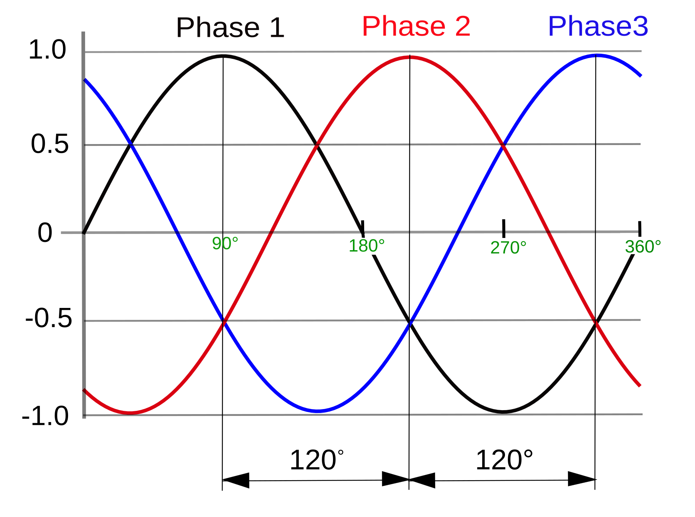
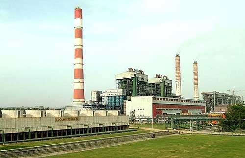
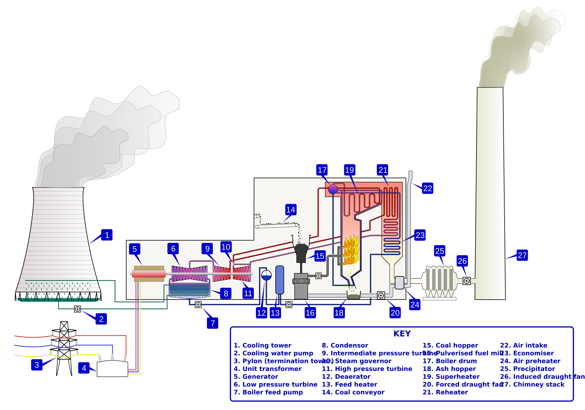
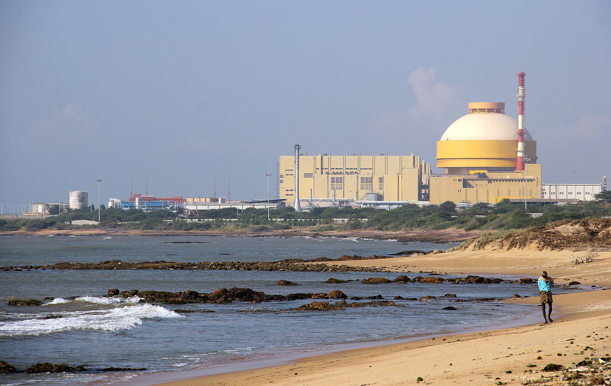
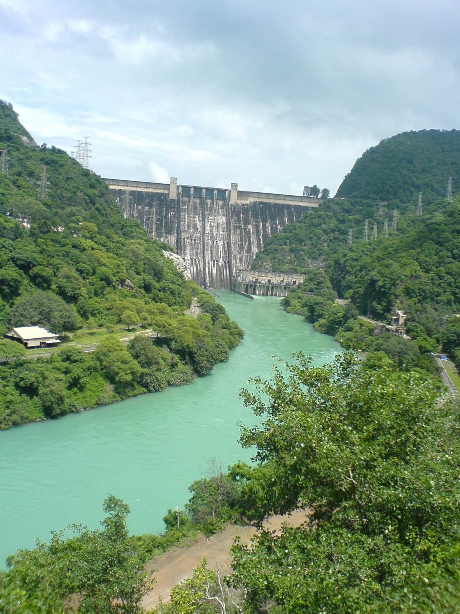
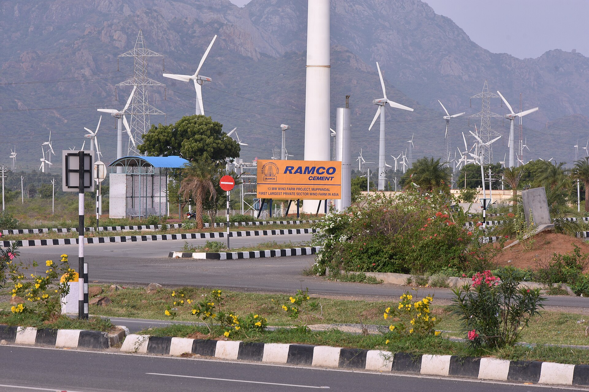
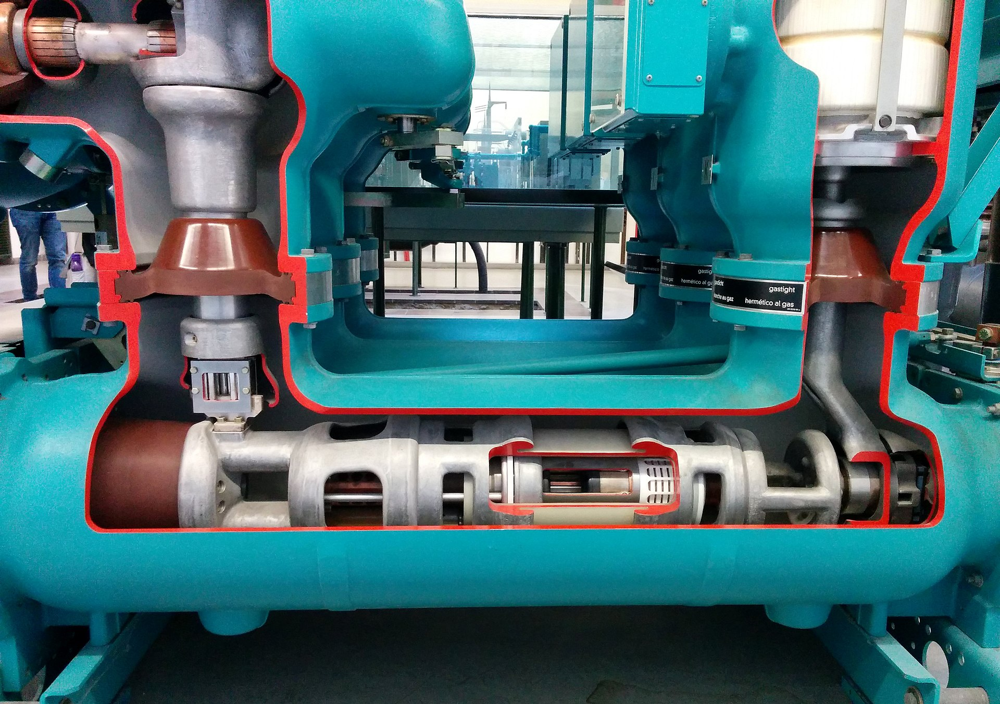
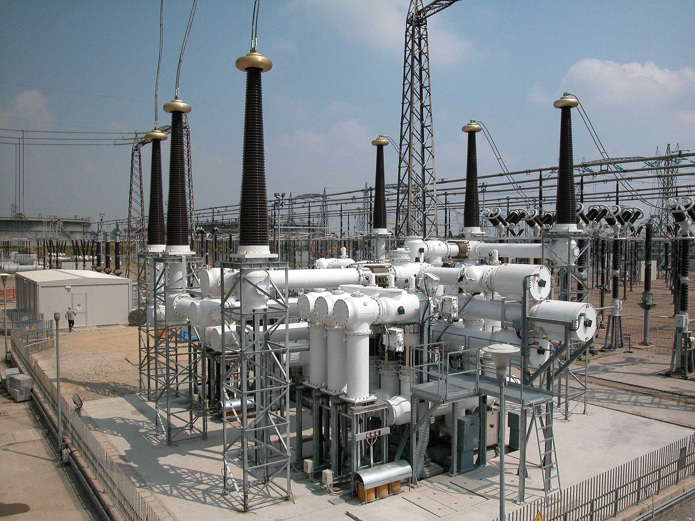
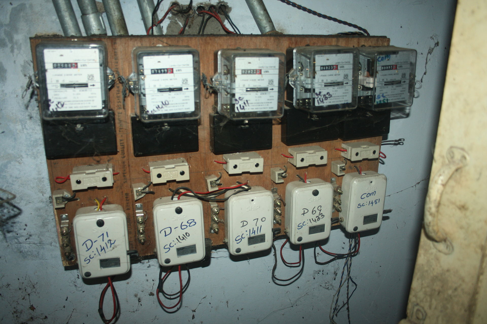
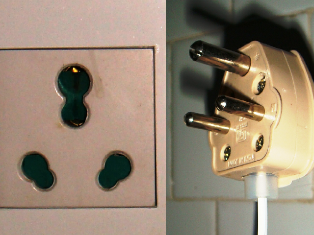

From a 765 kV tower on the Deccan to the sodium lamp on your colony's gate — this is a first-principles engineering tour of how electricity actually gets made, moved, and delivered across the third-largest power system on Earth.
Every socket in every wall in the country delivers the same thing — a 230-volt sine wave going up and down fifty times a second. Why that shape? Why that frequency? Why the three-phase RYB colour code? The grid's answers to these questions were settled a century ago and have not moved since.
Every socket in India delivers the same thing — a 230-volt sine wave oscillating 50 times a second. That single fact, standardised and maintained across more than 500 GW of generation and a million kilometres of wire, is the starting point of this book. Why that waveform, why that frequency, why not direct current? The answers were settled a hundred years ago, in a bitter industrial fight called the War of Currents.
Thomas Edison, who had lit Lower Manhattan in 1882 with direct current from the Pearl Street station, insisted that DC was the future. George Westinghouse and Nikola Tesla disagreed. The problem with DC was simple and decisive: at a fixed voltage, DC could not be economically transformed. And without transformation, you had to transmit electricity at the same voltage you used it at — roughly 110 volts. That meant thick copper wires to carry useful current, which meant you couldn't transmit more than a kilometre or two before the losses ate you alive.
AC, by contrast, could be fed into a transformer — two coils of wire around a shared iron core — and emerge at a much higher or lower voltage, with almost no loss. Ohmic loss in a wire is I²R: double the voltage, halve the current, and losses fall by a factor of four. This is the entire engineering case for high-voltage transmission, and it has not changed in 130 years. William Stanley demonstrated the principle publicly in Great Barrington, Massachusetts, in 1886 — 500 volts up, 3,000 volts across town, 100 volts down. The transformer was the killer app, and AC was its natural habitat. Within a decade the war was over.

What India's wall socket delivers is a voltage that swings from +325 volts to −325 volts fifty times a second. The "230 V" is the root-mean-square value — effectively, the equivalent DC voltage that would deliver the same power. Zero crossings happen 100 times per second. If you could see the sine wave you would never call it "alternating" — you would call it breathing.
Most power in India is delivered as three-phase, which means three separate sine waves offset from each other by 120 degrees. On Indian equipment the three phases are labelled R, Y, B (red, yellow, blue — a British convention); on newer international equipment you will see L1, L2, L3. Three-phase power has two remarkable properties. First, the total instantaneous power delivered is constant — unlike single-phase, where power pulses at 100 Hz, three-phase motors run smoothly with no torque ripple. Second, you can carry three times the power in four wires (three phases + neutral) instead of six (three independent single-phase pairs). The line-to-line voltage of Indian three-phase is 230 × √3 = 400 volts.
The transformer, the device that won the war for AC, is almost magical in its simplicity. Wind a primary coil of N₁ turns around one side of an iron core, and a secondary coil of N₂ turns around the other. Send AC into the primary. Changing current creates changing magnetic flux, which is channelled through the iron core, which induces a voltage in the secondary. The turns ratio does the rest: V₂/V₁ = N₂/N₁ = I₁/I₂. Power is conserved (minus a percent or two of iron and copper losses). A 500-MVA power transformer at a modern Indian substation is about 99% efficient. A distribution transformer at the end of your street is 95 to 98%.
Three more concepts that will matter later:
When current and voltage are out of phase (because of motors and transformers), some power oscillates back and forth between load and source without doing work. This "reactive power" (measured in VAR) is real and must be supplied — Indian industrial tariffs penalise low power factor (cos φ < 0.9).
At 50 Hz, AC flows mostly in the outer ~1 cm skin of a conductor, not uniformly across its cross-section. Doesn't matter for normal transmission, but it's one reason HVDC wins for very long hauls.
Historical. Europe and the Commonwealth took 50 Hz from AEG Germany in the 1890s; America took Westinghouse's 60 Hz. India inherited 50 from British-era standards. Both work. Japan famously uses both — 50 Hz Tokyo, 60 Hz Osaka, with frequency converters between.
Electrons in an Indian house wire drift at fractions of a millimetre per second. What travels at nearly the speed of light is the electromagnetic field surrounding the conductor. The wire is a waveguide, not a pipe — and the bulb lights up because the field got there almost instantly, not because the electrons arrived.
The water-pipe analogy is older than the grid and still works: a transformer is a hydraulic step-up converter that trades pressure for flow. Lower current in the wire means less "friction" heating the pipe. This is why every high-voltage transmission line exists: the grid is chasing the square of the voltage to kill resistive losses.
India has more than 500 GW of installed capacity. Coal does 70% of the actual work. Solar does most of the new building. Eight different kinds of plant, each answering a different question.
India is the world's third-largest electricity producer, behind China and the United States. As of early 2026 the country has about 505 GW of installed generation capacity, produces about 1,800 terawatt-hours a year (~6% of global electricity), and peaks at around 250 GW of simultaneous demand. This chapter is how those kilowatt-hours are actually made.
The first distinction to hold in your head: installed capacity is not the same as actual generation. A gigawatt of solar produces about a quarter of what a gigawatt of coal produces, because the sun doesn't shine all day. The two lenses tell different stories.
| Source | Capacity (GW) | Capacity share | Generation share | Typical CF |
|---|---|---|---|---|
| Coal thermal | ~220 | 44% | ~70% | 65% |
| Solar PV | ~150 | 30% | ~10% | 19% |
| Wind | ~48 | 10% | ~4% | 22% |
| Large hydro | ~48 | 10% | ~10% | 35% |
| Gas (natural) | ~25 | 5% | ~3% | ~15% |
| Nuclear | ~8 | 1.5% | ~3% | 75% |
| Biomass + others | ~12 | 2% | ~2% | — |
Coal is still the workhorse. India's coal fleet — several hundred units across roughly a hundred large utility stations, from 210-MW subcritical machines built in the 1970s to the newest 800-MW ultra-supercritical monsters — produces ~70% of the country's actual kilowatt-hours. NTPC Vindhyachal in Madhya Pradesh is the single largest station: 4,760 MW across thirteen units (210-MW and 500-MW ratings). NTPC (Public Sector) is the biggest generator overall, producing roughly a quarter of all Indian electricity.

How does a coal plant actually make electricity? The Rankine cycle, which has barely changed since the 1890s:
Efficiency: ~33% subcritical, ~38% supercritical, ~42% ultra-supercritical. Two-thirds of coal's energy still leaves as heat up the cooling tower. Modern plants also have flue-gas desulphurisation (FGD) being retrofitted post-2021 regulations, and electrostatic precipitators that remove 99%+ of fly ash.

The other players:
Bhakra-Nangal (1963, the original Nehruvian megaproject), Tehri (2006, India's tallest dam at 260 m), Nathpa-Jhakri, Sardar Sarovar. Pumped-storage schemes are growing rapidly — a ~50-GW pipeline is under construction by 2030.
NPCIL runs 22 reactors. Most are indigenous PHWRs (Pressurised Heavy Water Reactors) using natural uranium and D₂O moderator — 220, 540, and 700 MW units. Two Russian VVER-1000 reactors operate at Kudankulam (Tamil Nadu), with more coming. India is also commissioning the Prototype Fast Breeder Reactor at Kalpakkam, aimed at the long-promised thorium fuel cycle.
From 3 GW in 2014 to over 150 GW by early 2026 — the fastest scale-up in energy history, and India crossed the 50%-non-fossil capacity milestone in mid-2025, five years ahead of its COP pledge. The Bhadla Solar Park in Rajasthan (2.25 GW on 57 km²) was briefly the world's largest. Auction tariffs have fallen to ₹2.50-2.70 per kWh — cheaper than new coal. Rooftop solar is now at ~25 GW and accelerating under PM Surya Ghar.
Mostly in the Muppandal region of Tamil Nadu and across Gujarat and Rajasthan. Peak build was 2015-2017; the industry stalled under auction-based tenders and is now recovering with hybrid solar-wind-storage projects.


Gas has collapsed. India has about 25 GW of installed gas capacity but runs it at just ~15% capacity factor — most of India's gas plants are stranded because domestic gas is allocated to fertiliser and city gas, and imported LNG at ₹6-8 per kWh can't compete with coal at ₹3-4 or solar at ₹2.50. Gas is now primarily a peaking resource.
Where is it going? India has pledged 500 GW of non-fossil capacity by 2030 (part of the COP26 climate commitment) — roughly 280 GW solar, 140 GW wind, with nuclear and hydro making up the rest. The National Green Hydrogen Mission aims at 5 million tonnes per year by 2030, which would require roughly 125 GW of dedicated renewables just to power the electrolysers. Coal is projected to peak around 2030, then gradually decline. Meanwhile the Battery Energy Storage Systems (BESS) market is rapidly expanding — bid tariffs fell from ₹10 lakh per MW-month in 2022 to ₹2.2-2.8 lakh by late 2024.

22 years of stitching ended on 31 December 2013, when the Southern Region finally synchronised to the rest. Since then every generator in India — from a 500 MW Vindhyachal unit to a 25 kW rooftop solar inverter in Koramangala — has turned at the same 50 Hz beat.
The generator at Vindhyachal spins at 3,000 RPM and produces electricity at about 21,000 volts. By the time that electricity reaches your plug in Kolkata or Pune or Churu, it is at 230 volts. In between lie roughly 175,000 circuit-kilometres of inter-state transmission line, stepped up and stepped down through six different voltage classes. This is the continent-sized synchronous machine known as the Indian grid.
The story of how it became one grid is worth telling. India operated five regional grids — Northern (NR), Western (WR), Southern (SR), Eastern (ER), and Northeastern (NER) — for most of its post-independence history, stitched together slowly:
Since then, every generator in India has locked to the same 50 Hz beat. A coal unit in Korba, a solar inverter in Bhadla, a VVER turbine at Kudankulam, and a rooftop 5-kW inverter in Bengaluru all turn together. This synchronisation is the ground truth of grid operations — we will come back to it in Chapter 7.
Transmission voltages in India are standardised by the Central Electricity Authority. From highest to lowest:
| Voltage | Purpose | Typical use |
|---|---|---|
| 765 kV AC | Extra-high-voltage backbone | Inter-regional transfers; e.g. Raichur–Sholapur |
| ± 800 kV HVDC | Very long distance | Biswanath Chariali–Agra (1,728 km, 6,000 MW) |
| 400 kV AC | Heavy inter-state | Power-plant evacuation, regional corridors |
| 220 kV | State-level transmission | Major cities' bulk feed |
| 132 / 66 kV | Sub-transmission | Feeding distribution substations |
| 33 kV | Primary distribution | Substation-to-substation inside towns |
| 11 kV | Medium-voltage street feeder | Feeds pole-mounted transformers |
| 400 / 230 V | Low-voltage LT | Three-phase and single-phase to consumers |
A 765 kV tower is a lattice steel structure 60 to 70 metres tall, weighing 40 to 60 tonnes. Each phase is carried by a bundle of four aluminium conductor steel reinforced (ACSR) cables — bundling reduces corona discharge and doubles the effective cross-section. The insulator strings holding the conductors to the tower contain 35 to 45 ceramic or toughened-glass discs, each the size of a dinner plate. On top of every modern tower runs a single earth wire, the OPGW — Optical Ground Wire — which carries both lightning protection and a fibre-optic SCADA link connecting the tower's instruments back to the control centre.
For very long distances (over ~600 km overhead, over ~80 km submarine), HVDC (High Voltage Direct Current) beats AC. DC has no reactive power, no skin effect, no synchronisation issues, and needs only two conductors instead of three. The trade-off is cost: converter stations at each end cost hundreds of crores. But for long bulk transfers, it pays off fast.
India's flagship HVDC links:
The nationally-owned POWERGRID Corporation of India (PGCIL) owns roughly 85% of India's inter-state transmission network. At scale: ~175,000 circuit-km of lines, 280+ extra-high-voltage substations, about 500,000 MVA of transformation capacity, and — at the apex — the grid control hierarchy we will meet in Chapter 7.
A 765 kV inter-regional line moves gigawatts between regions. An 11 kV feeder moves megawatts down your street. A 230 V cable moves a few kilowatts into your flat. The physics is identical — voltage, current, Ohm's law. Only the scale changes, and at each scale the engineering constraints (insulation, clearance, cost, safety) look utterly different.
Every electron that reaches your ceiling fan has passed through four to six substations — fenced compounds of steel, copper, oil, and silicon compounds where voltage is transformed, where faults are detected and isolated in 40 milliseconds, and where the grid literally reconfigures itself around failures. Walk past the fence of a 400 kV substation at night and you can hear the transformers hum at exactly 100 Hz — twice the grid frequency, because the iron core's magnetostriction pulses every half-cycle.
Three kinds of substation by function:
Attached to a power plant. Steps voltage up from the generator level (11-21 kV) to transmission level (220-765 kV). A Vindhyachal switchyard has thirteen step-up transformer banks.
Interfaces between different transmission voltages (e.g. 765/400 kV, 400/220 kV). Home of the largest single assets in the grid — 500 MVA autotransformers.
33/11 kV for towns, 11/0.4 kV on poles for streets. Owned by the DISCOM, not the transmission company. Vast numbers — roughly 70,000 of them across India.
AIS (Air-Insulated Switchgear) is the open-air switchyard you've seen — cheaper, larger footprint. GIS (Gas-Insulated Switchgear) houses everything in SF₆-filled enclosures — five times more compact, used in cities (Delhi Bamnauli, Mumbai BKC).
The single most expensive asset in any substation is usually the power transformer, accounting for 30-40% of substation cost. A 765/400 kV autotransformer rated at 500 MVA weighs about 350 tonnes, stands four metres tall, and costs ₹30-50 crore. Its core is assembled from cold-rolled grain-oriented (CRGO) silicon steel laminations only 0.23-0.30 mm thick — individually insulated so eddy currents cannot flow across them. The copper windings wrap around the core in careful disc or helical patterns.
Inside the tank, the whole assembly sits submerged in ~50,000 litres of mineral transformer oil, which does two jobs: it insulates (oil has about ten times the dielectric strength of air) and it cools (circulating through radiators, sometimes pumped and fan-cooled). Cooling classes: ONAN (Oil Natural, Air Natural — convection only), ONAF (adds fans, +25% capacity), OFAF (pumps plus fans). A Buchholz relay at the top detects gas bubbles from internal arcing and trips the transformer offline before the fault escalates.
Voltage regulation uses an On-Load Tap Changer (OLTC) — a motorised switch that adjusts the turns ratio in about 1.25% steps, typically across ±10% range, without taking the transformer offline. This is what holds your neighbourhood's voltage steady when heavy industrial loads switch on at the factory across town.
Two classes of switch, often confused by the layperson. A circuit breaker (CB) is designed to interrupt current — including massive fault currents. Modern SF₆ breakers at 400 kV can interrupt 40-63 kiloamperes in about 40 milliseconds (two cycles at 50 Hz). They use an arc-quenching flow of sulphur hexafluoride, a gas with three times the dielectric strength of air.
An isolator is an air-gap disconnect that provides a visible break in the circuit for safety. Isolators are not designed to interrupt current — opening an isolator under load would vaporise its blades. The standard operating rule is: open the breaker first, then the isolator. The isolator exists specifically so the maintenance crew can look into the switchyard, see the gap with their own eyes, and trust it with their lives.

SF₆ is a problematic gas: it has 3× the dielectric strength of air, but it is 23,500 times more potent as a greenhouse gas than CO₂. Leaks from the world's SF₆ infrastructure now account for a meaningful fraction of global GHG inventories. A new generation of fluoronitrile gases (Novec 4710) is starting to replace SF₆ in 400 kV gear in the 2020s.

When a fault occurs (a tree falls on a 33 kV line, a lightning strike hits a 400 kV conductor), the current surges to ten or twenty times normal within microseconds. Without protection, this would burn up transformers, melt conductors, and set the rest of the grid on fire. Protection relays sense the fault and trip the appropriate circuit breaker fast enough to clear it before damage escalates.
Compares current entering and leaving a protected zone (transformer, bus, or line). If they don't match, there is a fault inside the zone. Instant trip. Used for transformers, generators, and busbars.
Measures apparent impedance (V÷I) to determine how far away a fault is on a line. Zones of progressively longer reach and longer delays coordinate the response — the nearest relay trips first.
Simple, robust, used widely in distribution. Time-graded so the downstream breaker trips before the upstream one.
Modern substations use microprocessor-based numerical relays (ABB, Siemens, Schneider, GE). IEC 61850 digital substations use fibre-optic GOOSE messages for trip commands in under 4 milliseconds.
The entire craft of substation safety is in the sequence. The breaker interrupts the arc — because it is designed to quench kiloamps of arcing current in a puff of SF₆. Only then does the isolator open, providing the maintenance crew with an air gap they can see and trust. Reverse the sequence and you will be the story they tell new engineers.
Transmission ends at the 33 kV grid substation on the edge of town. Everything after that belongs to one of seventy-odd DISCOMs, whose 11 kV feeders and pole-mounted transformers decide whether your lights actually stay on.
Up to now, every wire we have followed has been part of the transmission grid — owned by POWERGRID or a state transco, carrying bulk power between cities and regions. At the 33 kV grid substation on the edge of your town, transmission ends and distribution begins. Everything from here to your meter belongs to one of roughly seventy Distribution Companies (DISCOMs), and this last mile is where the grid stops being an engineering miracle and starts being a human institution with all its shortcomings.
The Electricity Act of 2003 unbundled the old State Electricity Boards into separate generation companies (gencos), transmission companies (transcos), and distribution companies (discoms). Twenty-three years later, the landscape looks like this:
Most public DISCOMs are financially stressed. AT&C (Aggregate Technical and Commercial) losses — theft plus line losses — run at 15-30% for state discoms, compared to 2-10% for well-run private ones (TPDDL in Delhi, Tata Mumbai, Torrent Ahmedabad). Accumulated DISCOM debt crossed ₹6.5 lakh crore by FY24. Central government bailout schemes keep the system solvent: UDAY (2015), and the current RDSS — Revamped Distribution Sector Scheme — committing ₹3.03 lakh crore through 2026.
From the grid substation onwards, the voltage ladder continues its descent:
| Voltage | Where | What |
|---|---|---|
| 33 kV | Sub-transmission from grid S/S | Connects to primary distribution substations |
| 11 kV | Medium-voltage feeders | Radial in villages, ring-main in cities; feeds pole-mounted DTs |
| 400 V (3-ph) | Low-voltage distribution | Line-to-line voltage on the 4-wire LT line |
| 230 V (1-ph) | The wall socket | Line-to-neutral; what every Indian home actually uses |
The workhorse at the end of your street is the distribution transformer (DT). Typically oil-immersed, pole-mounted (rural) or pad-mounted (urban), sized from 25 kVA (rural hamlet) to 1,000 kVA (commercial zone). Step-down ratio 11 kV / 433 V. A modest urban neighbourhood might be served by a single 250 kVA DT — enough for about 50 middle-class homes plus street lights. Larger colonies have 500 or 1,000 kVA units.
Four wires come off the DT: three phases plus a neutral. In Indian convention, the three phases are colour-coded Red, Yellow, Blue (R, Y, B). The neutral is connected to the earth at the DT — a critical safety feature, because when a phase wire accidentally touches ground (say, a branch fell on the line), the earth connection provides the fault-current path that triggers the upstream breaker to trip. Without it, the fault would be undetected and dangerous.
For decades, Indian LT lines were bare aluminium conductor on porcelain pin insulators mounted on wooden or concrete poles. This was cheap and simple but notoriously prone to theft (easy to hook and splice), birds (nesting in porcelain), kites (string conductive when wet), trees, and monkeys. Under the RDSS scheme, DISCOMs are now rapidly converting LT networks to Aerial Bunched Cable (ABC) — three phases plus a neutral bundled together inside XLPE insulation, suspended from a messenger wire. ABC virtually eliminates theft and most animal/plant faults in one move.
The Smart Metering National Programme targets ~250 million smart meters by 2026 — essentially every Indian consumer. As of early 2026, 100-120 million have been installed. The major vendors: Adani Energy Solutions, Tata Power, Genus Power, Secure Meters, HPL, L&T. The meters communicate over a polyglot of technologies: RF mesh (Wi-SUN), cellular (NB-IoT, LTE-M), and occasionally power-line communication (PLC).
Smart meters enable a transformation in tariff design. Time-of-Day (ToD) tariffs — mandatory for smart-metered consumers since April 2024 — charge different rates at different hours: cheaper at midday (solar surplus), expensive at evening peak (7-10 PM, AC load). Prepaid billing. Remote disconnect. Outage detection without truck-rolls. Demand-response signals. The whole data loop between the consumer and the grid tightens from months to minutes.

Reliability is measured by the SAIDI — System Average Interruption Duration Index, in hours of outage per consumer per year. The best-performing urban DISCOMs (TPDDL, Tata Mumbai, Torrent Ahmedabad) achieve 10-20 hours per year. Struggling state DISCOMs frequently exceed 100 hours — one of the largest gaps in service quality between public and private utilities in any country.
For most Indians, the visible face of the grid is that drum-shaped pole-mounted transformer you walk past on the way to the bus stop — the one with four wires dropping from it, a couple of porcelain insulators on top, and a faint 100 Hz hum. The thing above it is an 11 kV feeder. The thing below it is your neighbourhood. Everything in this chapter, boiled down, is about that transformer.
Everything upstream of your switchboard exists to deliver one deceptively simple thing — a stable 230-volt sine wave at the terminals of your MDB. The last mile is where grid engineering becomes life-safety engineering, measured in milliamperes and milliseconds.
Everything upstream of your switchboard exists to deliver one deceptively simple thing — a stable 230-volt, 50-Hz sine wave at the copper terminals of your Main Distribution Board. The last mile, however, is where grid engineering becomes life-safety engineering. And the numbers that matter are no longer gigawatts and kilovolts but milliamperes and milliseconds.
A service cable drops from the LT line (or ABC) outside your building to your meter. For small homes sanctioned up to about 5-7 kW, this is a 2-core single-phase cable — one phase wire plus neutral. Larger homes and small commercial premises take a 4-core three-phase drop — three phases plus neutral, carrying 400 V line-to-line and 230 V line-to-neutral. HT consumers with sanctioned loads above ~50-150 kW (state-specific) take 11 kV directly from the feeder and have their own private transformer on-premises.
The cable enters your meter, owned by the DISCOM. Three generations of meters coexist in India today: electromechanical (the old disc meter — being phased out), static/electronic (digital LCD, accurate), and smart (the current rollout — digital plus two-way communications). After the meter, the customer's wiring begins.
All of it terminates in your Main Distribution Board (MDB) — a metal or plastic enclosure usually mounted near the electrical entry, containing the protective devices that guard everything downstream:
A Moulded Case Circuit Breaker as the whole-house isolator. Rated at 40-100 A for residential.
Residual Current Circuit Breaker. This is the device that saves your life. More on it below.
The busbar behind the MCBs, connecting everything to the mains.
Miniature Circuit Breakers for each branch circuit — lighting, sockets, AC, geyser, kitchen. 6-40 A.
Three different hazards, three different devices:
Overload. If you plug too many appliances into one circuit, current gradually exceeds the rating of the wire. The MCB's bimetallic strip heats up slowly (over tens of seconds at 1.5× rated current), bends, and trips the breaker. Slow is the right response to a slow problem — a brief surge during motor start-up shouldn't trip everything.
Short circuit. Live wire touches neutral directly. Current surges to hundreds of amperes in milliseconds. The MCB's magnetic solenoid trips within 10 milliseconds. Fast response to a fast problem.
Earth fault. Live wire touches the metal casing of an appliance (the user's geyser, the water pump, the fridge). If a person touches the casing, current flows through their body to earth. This is the lethal case. No overcurrent detector will catch it — the absolute current is often just a few tens of milliamperes, well below the MCB's trip level. The RCCB (Residual Current Circuit Breaker) catches it by comparing the current flowing in live versus the current flowing back in neutral. In a healthy circuit, these are equal. If they differ by more than 30 milliamperes, some current is leaking to earth (through a human), and the RCCB trips the circuit within 40 milliseconds. 30 mA is below the threshold that stops the heart. 40 ms is faster than the heart's own rhythm. This is what keeps people alive.
Branch circuits are sized by load. Indian Standard IS 732 caps voltage drop at 3% between the meter and the farthest socket. Typical residential wiring:
| Circuit | MCB rating | Wire size (copper) | Examples |
|---|---|---|---|
| Lighting | 6 A | 1.5 mm² | LED bulbs, fans |
| 5-A sockets | 6-10 A | 1.5 – 2.5 mm² | Phone chargers, TV, laptop |
| 15/16-A sockets | 16 A | 2.5 – 4 mm² | AC, geyser, fridge, washing machine |
| Kitchen dedicated | 20-32 A | 4 – 6 mm² | Microwave, induction cooktop, oven |
Indian wiring colours per IS 11353: Red, Yellow, Blue for the three phases (same RYB used throughout the grid); Black for neutral; Green (or green-yellow stripe) for earth.
The earth wire doesn't carry current in normal operation. Its job is to make earth faults detectable. Every metal part of every appliance that could become live under fault — geyser casing, fridge frame, washing-machine chassis, AC outdoor unit — is connected to the earth wire. If a phase wire inside the appliance accidentally touches the metal casing (damaged insulation, water ingress, rodent chewing), the earth wire provides a low-impedance path for the fault current to flow to ground. This path:
At the premises, the earth wire connects to an earth electrode in an earth pit. Two common types: traditional (3-metre galvanised iron or copper rod buried in a pit, alternating layers of charcoal and salt, watered periodically — lowers soil resistance) and chemical (a GI pipe filled with conductive compound — maintenance-free, increasingly common). Indian Standard IS 3043 targets 5 ohms resistance for domestic earthing. Poor earthing (over 20 Ω) means the protection devices may not trip fast enough, and everyone in the house is taking an invisible bet.

Indian plug standards are a combined Type D (5 A) and Type M (15 A) — a single modular socket accepts both round-pin sizes in the same opening. The large round top pin on a plug is always the earth pin, mandated longer than the other two so it makes contact first when plugging in and breaks last when unplugging. This is not a design accident. It is life-safety engineering.
| Appliance | Rated power | Typical monthly use |
|---|---|---|
| LED bulb (9 W) | 9 W | ~3 kWh |
| Ceiling fan (BLDC) | 28-35 W | ~15 kWh |
| Refrigerator (5-star, ~250 L) | ~130 W avg | ~50 kWh |
| Split AC (1.5 ton, 5-star) | 1,500 – 1,900 W | ~120 kWh (summer) |
| Geyser (15 L) | 2,000 – 3,000 W | ~40 kWh |
| Induction cooktop | 1,500 – 2,000 W | ~20 kWh |
A typical urban family of four consumes 200-600 kWh per month, paying ₹1,200-6,000 depending on state, slab, and subsidy. Rural farms with free/subsidised agricultural connections often draw less but at crushing tariffs for the DISCOM's balance sheet.
When you install a grid-tied rooftop solar system, a net meter replaces your ordinary meter — it measures energy flowing in both directions. The solar inverter synchronises to the mains 50 Hz and exports any surplus. Critically, grid-tied inverters must implement anti-islanding per IEC 62116 / IS 16221: within 2 seconds of the grid going down, the inverter must disconnect. If it failed to, your solar system would continue to back-feed the dead LT line — and a lineworker climbing the pole to fix the "dead" wire upstream would be electrocuted. Anti-islanding is not optional; it is a hardware-level safety requirement every Indian DISCOM enforces before commissioning a rooftop system.
A live wire touching the metal casing of your geyser is not a rare fault. It is exactly what happens when a screw vibrates loose, a rodent chews insulation, or condensed water shorts a terminal. Without an earth wire, the casing floats at 230 volts and waits. The next person who touches it — barefoot on a wet bathroom floor — becomes the path to ground. With an earth wire, the same fault trips the RCCB within forty milliseconds and the person feels nothing.
Electricity cannot be warehoused. Somewhere in the country, a generator must match every bulb and arc furnace in real time — and when that balance breaks, as it did on 30 and 31 July 2012, 620 million people find out.
The Indian grid delivers about 250 GW at peak — enough power to run New York plus Tokyo plus London simultaneously, give or take. And it does so while producing none of that energy more than a fraction of a second before it is used. Electricity cannot be warehoused at grid scale. Somewhere in the country, a generator must match every bulb and arc furnace in real time, and when that balance breaks, as it did on 30 and 31 July 2012, 620 million people find out.
Balance is maintained by a three-tier control system:
All three tiers operate under the Indian Electricity Grid Code (IEGC) — the rulebook that sets permitted frequency bands (49.9-50.05 Hz), scheduling procedures, and deviation penalties. POSOCO (Power System Operation Corporation) had been carved out of PowerGrid as a separate subsidiary in 2010 and fully demerged as an independent government entity in 2017; in November 2022 it was renamed Grid Controller of India Limited (brand: Grid-India), sharpening the operator's independence from the transmission utility. The governance principle — operator structurally separate from asset-owning transco — tracks the ISO/RTO model used in other large grids.
The operating day is divided into 96 blocks of 15 minutes each. For every block, every generator has a scheduled output and every DISCOM has a scheduled drawal. A day ahead, the market clears — generators and DISCOMs submit bids on the Indian Energy Exchange (IEX), PXIL, or HPX, and prices are set for each block. Intra-day, they adjust. In real time, deviations from schedule are settled via DSM (Deviation Settlement Mechanism) — you pay a penalty priced off the grid frequency at the moment of your deviation. Under-draw when frequency is low (grid is stressed) and you are rewarded. Over-draw when frequency is low and you are punished. Price signal feeds information.
Real-time frequency stability sits on three time-scales:
Free Governor Mode Operation (FGMO). Every large generator's governor is set to respond automatically to frequency deviations. Drop frequency by 0.1 Hz and ~4,000-5,000 MW of auto-response kicks in across participating units — entirely without human intervention.
Automatic Generation Control (AGC). Central computers send set-point adjustments every 4 seconds to ~60 GW of participating capacity. India rolled AGC out in the 2020s — a major operational upgrade.
Manual redispatch by operators. Ancillary-services markets (SRAS, TRAS) launched 2022, pay generators to hold reserves ready.
A 0.1 Hz deviation lasting a minute means 60 synchronous-cycles of accumulated clock error. For decades, Indian wall clocks drifted by minutes every week from this. Modern GPS-disciplined clocks ended the problem — the grid no longer owes you accurate time.
At any moment, the grid dispatches generators in merit order — cheapest first. The typical stack, from cheapest to most expensive:
The Security Constrained Economic Despatch (SCED) pilot introduced in April 2019 lets the NLDC swap expensive inter-state units for cheaper ones in real time, respecting transmission constraints. It has saved an estimated ₹1,000-1,500 crore per year.
Solar ramps up at 7 AM, peaks around noon, and collapses by 7 PM. Indian residential demand, by contrast, peaks in the evening (7-10 PM) when people turn on ACs and lights after work. As solar capacity has grown past 150 GW, the net demand curve (total demand minus solar) has developed the characteristic duck curve shape — belly at noon (solar surplus) and a steep ramp into the evening peak. At peak solar times, net demand is suppressed so much that coal units must back down to minimum, losing money on every MWh. In the 6-9 PM ramp, net demand climbs at 15-20 GW per hour — faster than any other grid in the world. Coal cannot ramp that fast. Gas can, but there is not enough gas. Batteries can, but there are not yet enough batteries.
The solution being built, rapidly, is Battery Energy Storage Systems (BESS). Bid tariffs for 4-hour BESS have crashed from ₹10 lakh per MW-month in 2022 to ₹2.2-2.8 lakh by 2024. The government's ₹9,400 crore Viability Gap Funding scheme targets 13.2 GWh of BESS deployment by 2030. Alongside, ~50 GW of pumped-hydro storage is being developed — slow to build but very cheap to operate once online.
On 30 July 2012 at 02:33 IST, the Northern grid collapsed. A 400 kV line between Bina and Gwalior was out for maintenance. Several northern states (UP, Haryana, Punjab) had been chronically over-drawing from the grid — frequency was sagging. A distance relay on a remaining 400 kV line mis-coordinated and tripped the line on an overload it should have ignored. The cascade began. Within seconds, every synchronous generator in the Northern region had fallen out of step. Around 350 million people lost power.
The grid was restored in 15 hours. But on 31 July at 13:00 IST, a similar sequence hit harder. The Northern, Eastern, and Northeastern regions collapsed together. The Western and Southern regions held, but about 620 million people across 22 states lost power — the largest blackout in human history, affecting roughly one in ten humans alive at that moment.
The root causes were identified by a CERC-commissioned inquiry: chronic over-drawal by northern states, weak inter-state transmission margins, inadequate under-frequency load-shedding schemes, insufficient coordination between SLDCs, and relay mis-coordination on critical lines. The subsequent reforms are why the grid today is safer: stricter deviation penalties, automatic UFLS, real-time monitoring via Phasor Measurement Units (PMUs) sampling at 25-50 samples per second, the SCED pilot, the ancillary-services market, and the 2022 separation of Grid-India from POWERGRID to sharpen operator independence.
India's 2030 pledge is 500 GW of non-fossil installed capacity — roughly 280 GW solar + 140 GW wind + remainder nuclear/hydro. To operate this grid stably will require ~47 GW of battery storage and 20-27 GW of pumped hydro. The Unified Real-Time Dynamic State Measurement (URTDSM) project has deployed 2,000+ PMUs across PowerGrid's network. AI/ML forecasting of renewable output has cut day-ahead forecast error to 4-6% mean absolute percentage error. The system is getting smarter, faster, and harder to crash. The 2012 blackout, in hindsight, was the pivot — the moment the Indian grid stopped being a national institution and started becoming a digital one.